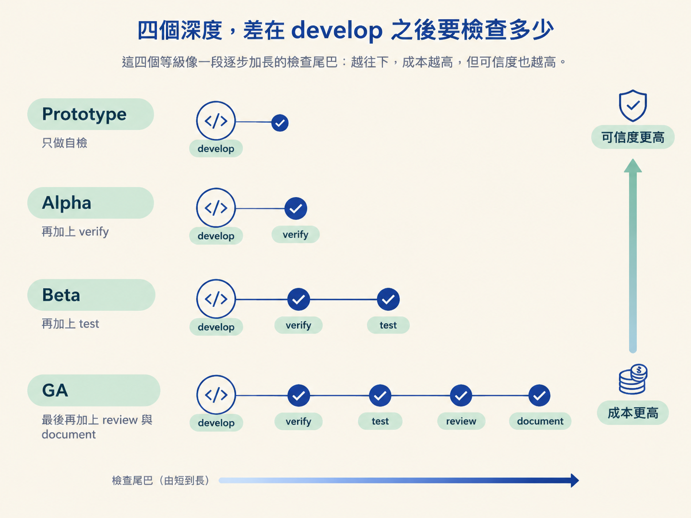
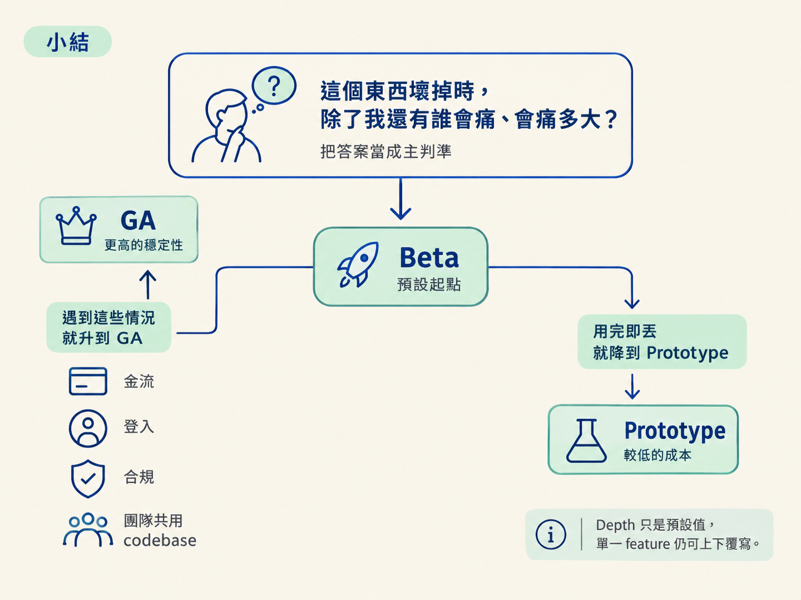

你將能根據專案的風險與交付情境，在 Prototype、Alpha、Beta、GA 四個 depth 之間做選擇，並理解：depth 是預設值，不是把專案鎖死的軌道。
如果今天只是把按鈕換個顏色，難道也要跑完 verify、test、review、document 嗎？對還在亂試的 side project 來說，光跑檢查可能就比寫程式更累。
但如果改的是登入或付款，只靠自己看一眼就出貨，也同樣令人不安。
這就是這一節要處理的選擇：這個專案或功能，要在「快」和「可信」之間站在哪裡？
工作流把這個取捨整理成一個叫做 workflow depth 的旋鈕。你可以在 /scope 結束前轉動它。系統會給建議，但最後怎麼選，仍然由你決定。
depth 的作用很單純：它只決定 /develop 之後還要跑哪些檢查。前面的階段，尤其是決策 gate，不會因為 depth 變低就消失。
| Depth | develop 之後跑什麼 | 建議的「done」時點 | 適合什麼 |
|---|---|---|---|
| Prototype | 什麼都不跑，只靠 develop 自己的 build-time self check | build self check 通過，develop 就可以標 done | 用完即丟的原型、實驗、個人專案 |
| Alpha | /check verify（跑真 app） | /check verify 通過 | 低風險功能、仍想被證明的內部工具 |
| Beta | /check verify → /test | 測試進來、feature 收斂 | 大多數正式產品 |
| GA | /check verify → /test → /check review（不同模型）→ /document | 同上，且多數 feature 預設被視為需要一份 spec | 高風險情境：金流、登入、合規、團隊共用 codebase |
這四個等級像一段逐步加長的檢查尾巴：越往下，成本越高，但可信度也越高。

Prototype 只依賴 develop 內建的自檢。它會 typecheck，能在看得到畫面時 render 出來讓自己檢查，再加上你的人工確認。
Alpha 開始跑真的 app；Beta 再加入測試；到了 GA，除了驗證和測試，還會找不同模型家族進行審查，並補上人類可以讀懂的文件。
低 depth 不代表跳過 architect。depth 只調整 develop 之後的檢查，不會移除前面的決策閘門。低風險專案通常比較少需要 architect，是因為它們本來就少有承重決策；一旦真的出現，仍然要進 gate。
不用死背「哪種專案一定配哪個等級」。直接問自己幾個能回答的問題，通常就能找到合適的 depth。
反例一：GA 專案裡的低風險功能，可以往下調。
一個 GA 專案裡，可能偶爾會有無關緊要的內部小工具。這種 feature 可以單獨降到 Alpha 或 Prototype。depth 是專案的預設值，每個 feature 都能覆寫。
反例二：Prototype 專案裡的高風險功能，必須往上調。
一個整體仍是 Prototype 的實驗專案，如果突然要接真的付款，付款功能仍然要走較完整的路徑。低 depth 不能拿來替高風險決策找藉口。
反例三：depth 不是擋住 done 的閘門。
四個等級都不會扣住「done」，等你把所有框框打勾才放行。你可以比建議更早宣告完成，也可以比建議多跑幾道檢查。某一步選擇跳過時，系統會誠實記成 skipped，而不是偷偷當成已完成。
所以，depth 提供的是「建議的完成時點」，不是「允許完成的條件」。
反例四：無論 depth 多低，承重決策都要留下紀錄。
所有等級都有同一條底線：承重決策必須被寫下來。
你可以選擇先蓋、之後再補。但在這種情況下，develop 會替你寫一份標記為 Assumed 的小 spec，記錄當下採用的假設。同時，功能會留下「欠 ratification」的旗標，直到你回頭用 architect 正式審議。
這個旗標不會擋你標 done。它的作用是讓這個決定不會悄悄消失在對話裡。depth 管的是檢查要跑多少，決策留不留紀錄是另一回事。
depth 是/develop之後那段「檢查尾巴」的長度：Prototype 只靠自檢，Alpha 加上/check verify，Beta 再加/test，GA 再加不同模型的/check review與/document。它只是預設值，單一 feature 可以上下覆寫；它不會扣住 done，也不會改動前面的決策閘門。唯一跨越所有等級的底線是：承重決策一定要寫進檔案。
可操作的決策規則：先問「這個東西壞掉時，除了我還有誰會痛、會痛多大」，把答案當成主判準。預設從 Beta 起跳；用完即丟的東西降到 Prototype；碰到金流、登入、合規或團隊共用 codebase，就升到 GA。

選完後再確認一次：這只是預設值，任何 feature 都能單獨覆寫。
到這裡，抽象規則已經就位：九個工作站、它們的順序與入口，以及檢查應該多嚴。但第一次實際使用時，規則仍可能在腦中打結。下一節會跟著一個「登入＋個人待辦清單」的小 app，從想法一路走到出貨，把這些規則放進一個具體故事裡。